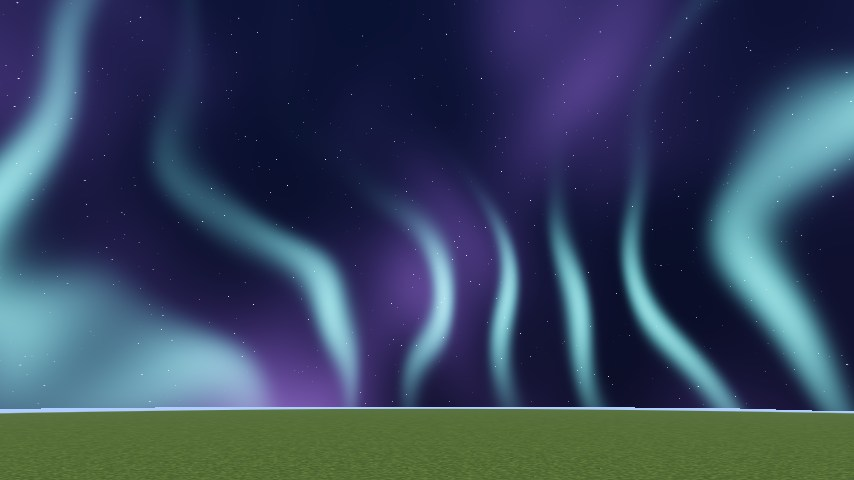
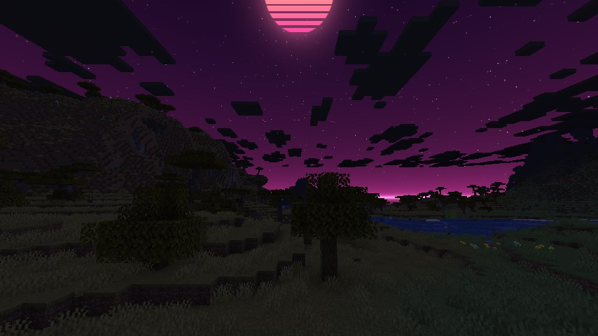

Set the atmosphere.
Expressive skies, ambient effects, and cosmetics that make the familiar feel new.
The places you know. A feeling you don’t.
Make every session a little more yours with Moon.
01 / THE EXPERIENCE
Moon brings a personal touch to Minecraft. From the sky above you to the smallest detail on your HUD, shape a world that feels like your own.

A CHANGE OF ATMOSPHEREExpressive skies, ambient effects, and cosmetics that make the familiar feel new.
Combat indicators and fight stats put the details you care about within sight.
Arrange your HUD, customize your interface, and save a setup that feels right.
02 / A DIFFERENT ATMOSPHERE
One world. More ways to see it.
Explore a few of Moon’s in-game skies.

MOON / WORLD VISUALSA neon horizon. A familiar world.
A whole different mood.
03 / PERSONALLY YOURS
A clean canvas for the way you play. Keep your essentials close, find your color, and let everything else fade into the background.
A little preview. Go ahead, make it yours.
A little space, just for you.
04 / THE SMALL DETAILS
The essentials, before your next adventure.
Back to the views ↗Moon is a PvP-focused Fabric mod for Minecraft, with combat HUDs, fight stats, visual customization, cosmetics, and a configurable interface. It puts your setup at the center of the experience.
Yes. Moon includes a HUD editor, interface themes, module settings, and profiles. Choose the information you want to see, arrange it to fit your play style, and give your setup a personal touch.
Yes. The sky and world images on this page were captured in Minecraft running Moon Client. The interactive workspace above is a website concept illustrating customization, rather than a live client session.
Not yet. This is a first look at the Moon experience. Downloads aren’t available on this website.
SAME WORLD. A NEW PERSPECTIVE.